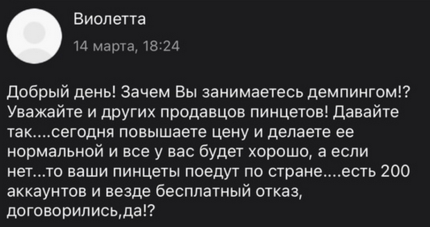

Один из способов улучшить свои дела на маркетплейсе – ухудшить дела ближнего твоего.
Ложные заказы
Схема следующая. За копейки покупаем профиль на маркетплейсе, чтобы обойти постоплату, или сами берем симку и качаем профиль, покупая мелкие спиннеры.
С помощью программы аналитики мы видим какие остатки у конкурента на складах.
Все эти остатки, или частично, чтобы не было подозрительно, мы массово заказываем куда-нибудь на север, так товар будет долго идти и долго лежать.
После товар, естественно, не забираем и отказываемся от него. Тебе это ничего не стоит, а конкуренту:
– минус оборот,
– минус за хранение,
– минус деньги за езду товара, помним, что за возврат селлер оплачивает обе стороны,
– минус позиции в ленте, маркетплейс пессимизирует тех, кого часто возвращают.
А катающийся таким образом товар другому в это время не продашь. Даже если такой покатавшийся товар купят, селлер все равно уже продаст его в минус.
Демпинг ниже точки рентабельности
Второй популярный способ недобросовестной конкуренции – демпинг. Продаешь в минус, лишь бы убить конкурентов. Также демпинговать могут те, кто уже уходит с маркетплейсов, а продать остатки надо быстро.
Вот как выглядят типовые переговоры продавцов:

Здесь виден и демпинг, и как с ним борятся через ложные заказы другие продавцы.
Это кра